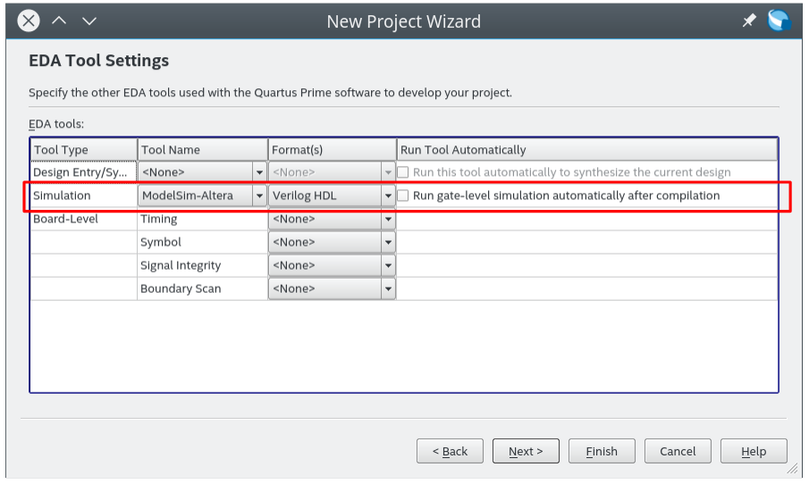

在 DE2-115 開發紀錄: 硬體認識 一文中，我們發現了 DE2-115 上面有一堆 LED 燈可以使用，就讓我們來建立最簡單的專案，並透過撰寫程式來控制這些 LED 燈吧 !
本文將採用業界比較常用的 Verilog 進行示範，在參照這篇文章之前，需要自行安裝好 Intel® Quartus® Lite Edition 或是進階版本。
開發目標
我們要透過純粹的可程式邏輯(Programmable Logic, PL) 去控制 LED，也就是說，我們只寫硬體描述語言 Verilog 來控制 DE2-115 上面的 LED，讓他依照我們設定的頻率進行閃爍/亮滅。
在這邊，我們選用 DE2-115 上面的 LEDG0 ~ LEDG3，也就是挑選出四個綠色的 LED 來進行我們這個 LED 閃爍燈專案，具體對應的 FPGA 腳位請參照上圖。
另外，從上面的電路可以看出，當我們從 FPGA 輸出高位準的訊號出來的時候，此時 LED 為亮，反之，若設定該腳位為低位準(邏輯 0)的話，則 LED 為暗。
建立我們的專案
我們首先透過 File -> New Project Wizard 建立一個新的專案

點選 Next >
在這邊，我設定專案位置存放到 /home/coldnew/blink 去，專案名稱為 blink ，而程式的進入點則是 blink 這個模組名稱。 設定完成後，點選 Next >
由於此時我們沒有樣板，因此選擇 Empty project , 點選 Next >
由於我們還沒有開始撰寫程式，無法加入寫好的檔案，這邊直接選 Next >
選擇 DE2-115 的 FPGA 型號與類別，在 DE2-115 開發紀錄: 硬體認識 有提到採用的是 Cyclone IV 的 EP4CE115F29C7 晶片，選擇好後選擇 Next >
接下來，在 EDA Tool Settings 這邊選擇採用 ModelSim-Altera 來驗證 Verilog HDL 檔案，我們會在之後的文章做簡單的模擬驗證。

都好了後，可以看一下建立新的專案的一些資訊，按下 Finish 完成專案的建立
撰寫程式
建好專案後，你會發現如果對 Project Navigator 裡面的 blink 點兩下，會彈出 Can't find design entity "blink 的視窗，這是因為我們還沒建立我們的程式碼檔案 blink.v , 這邊就來建立它。
首先點選 File -> New ，會看到如下的視窗，在這邊我們要使用 Verilog 進行開發，因此選擇 Verilog HDL File 來建立我們的檔案
接下來，在這個檔案加入類似 zybo board 開發記錄: 透過可程式邏輯控制 LED 閃爍 一文的程式碼，並將此檔案除存為 blink.v (注意到這個模組名稱和前面提到的 進入點(top-level design entity) 要相同)
`timescale 1ns / 1ps module blink(output reg [3:0] led, input clk); reg [26:0] counter; always @(posedge clk) begin if (counter == 27'd50000000) begin led <= led + 1; counter <= 0; end else begin counter <= counter +1; end end endmodule
這個程式做了什麼呢? 在 DE2-115 開發紀錄: 硬體認識 一文中，我們知道了進到 DE2-115 的時脈為 50M Hz, 如下圖:

由於 50M Hz 的速度太快，我們需要簡易的除頻器讓輸入的時脈可以慢一點點，這樣我們的 LED 才不會因為 視覺暫留效應看起來就像是恆亮的狀態。
在這邊的程式，我們透過一組暫存器來存放當前計數的狀態，每計數 50 百萬次後，就讓 LED 暫存器的數值增加，反之則是讓計數器的內容增加。
也就是說，由於我們的時脈輸入將會設定為 50 MHz，因此讓計數器計數 50 百萬次後調整 LED 暫存器的資訊，相當於 每 1 秒 修改一次 LED 暫存器的內容
腳位設定
由於我們建立這個專案的時候還是空專案，並未指定對應的 FPGA 腳位，因此就現在來設定吧。
在設定腳位之前，需要執行 Processing -> Start Compilation 讓 Quartus 編譯與分析我們的程式。
編譯都順利的話，Quartus 會提出我們程式的報告
現在，讓我們來指定腳位的對應吧~ 點選 Assignments -> Pin Planner 進入到腳位設定視窗
進入到 Pin Planner 後，照著我們一開始的規劃，將相對應的腳位填上
這樣這個專案就差不多告成囉，不過由於我們剛設定好腳位對應，所以還需要 再編譯一次
這次編譯好了以後，就可以下載到 DE2-115 試試看
下載到 DE2-115
要下載到 DE2-115 的話，選擇 Tools -> Programmer 召喚下載用的程式
假設在 Programmer 頁面下，並未看到 USB Blaster 這樣的下載器資訊的話，你可能需要點選一下 Hardware Setup 去指定下載器
如果有看到下載器的話，就點選 Start 就會開始下載囉~ 下載完成就會看到 Progress 這個欄位顯示 100% (Successful) 了
好了我們已經下載完成，去看看我們的板子的顯示狀況吧 !
結果
按照本篇文章的設定，你的 DE2-115 顯示應該如以下影片:
取得程式碼
本篇的程式碼已經上傳到 github, 你可以透過以下命令下載並透過 Quartus 打開專案
git clone https://github.com/coldnew-examples/DE2-115-Led-Blink.git